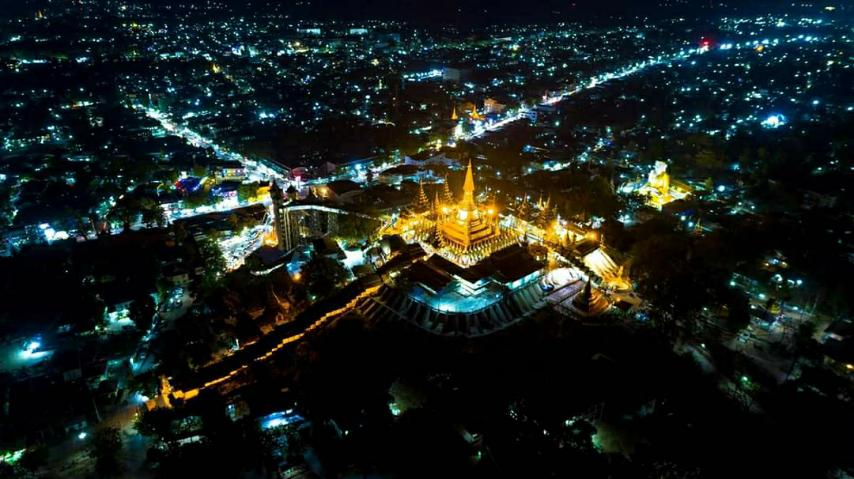

လေးဆူဓာတ်ပျော် ရွှေဆံတော်စေတီတော်မြတ်ကြီး

လေးဆူဓာတ်ပျော် ရွှေဆံတော်စေတီတော်မြတ်ကြီးသည် မြတ်စွာဘုရား သက်တော်ထင်ရှားရှိစဉ်ကပင် တည်ထားကိုးကွယ်ခဲ့သော စေတီတော်မြတ်ကြီးဖြစ်ပါသည်။ “လေးဆူဓာတ်ပျော်” ဟုခေါ်ဆိုရခြင်းမှာ-
(၁) ကကုသန် မြတ်စွာဘုရား၏ ဒုကုဋ်သက်န်းတော်
(၂) ကောဏဂုံ မြတ်စွာဘုရား၏ အံသကိုဋ်တော်
(၃) ကဿပ မြတ်စွာဘုရား၏ ခါးပန်းတော်နှင့်
(၄) ဂေါတမ မြတ်စွာဘုရား၏ ဆံတော်မြတ်လေးဆူ ၊ မွေရှင်တော်မြတ်ရှစ်ဆူ ၊ နိသီဒိုင်တော် တို့ကို ဌာပနာ၍ တည်ထားသောကြောင့် ခေါ်ဆိုရခြင်းဖြစ်ပါသည်။ လေးဆူဓာတ်ပျော် ရွှေဆံတော် စေတီတော်မြတ်ကြီး တည် ထားသောတောင်တော်ကို “သူဒသန” တောင်တော်ဟုခေါ်ပါသည်။ မြတ်စွာဘုရား နုစဥ်အခါ ဟသာ်မင်း၊ ကြက်မင်း၊ ဖွတ်မင်း၊ ယုန်မင်း ဖြစ်စဥ်က နေထိုင်ခဲ့သော တောင်တော်ဖြစ်သည်။ စေတီတော် ဒါယကာများမှာ အဇ္ဇိကနှင့် ဘလ္လိက ကုန်သည်ညီနောင်၊ ဧရာပထနဂါးမင်း၊ သမ္ဘုလ္လဘီလူးမင်း၊ သိကြားမင်း၊ ဗြဟ္မာမင်း တို့ဖြစ်ကြသည်။ မဟာသက္ကရာဇ် ၁၀၃-ခုနှစ်၊ တပေါင်းလဆန်း ၁၃ရက်နေ့တွင် စတင်တည်ထားရာ၊ ထိုနှစ်တပေါင်းလပြည့်နေ့တွင် ပြီးစီးသည်။ တည်ဦးစက ဥာဏ်တော်၇-တောင်၊ အလျားအနံ၁၄-တောင်ရှိ၍ စပါးစုသဏ္ဍာန် မြေစိုက်စေတီတော် ဖြစ်ပါသည်။

သာသနာနှစ် ၁၂၆-ခုနှစ်၊ သရေခေတ္တရာပြည်ကို တည်ထောင်စိုးစံသော ဒွတ္တပေါင်မင်းကြီးသည် ဘဝဟောင်း က အဇ္ဇိကနှင့် ဘလ္လိက ကုန်သည်ဖြစ်ခဲ့ကြသော သားတော်ရဟန္တာ ၂-ပါးက ရ ှာဖွေပေးသဖြင့် စေတီတော်ကို ဖူးတွေ့ရသောအခါ လွန်စွာကြည်ညိုခြင်းဖြစ်ပြီး စေတီတော်ကို ယခုဖူးတွေ့ရသည့်ပုံသဏ္ဍာန်အတိုင်း ပြုပြင်တည်ထားခဲ့ပါသည်။ မြန်မာမင်းအဆက်ဆက်တို့သည် စေတီတော်ကြီးကို ကိုးကွယ်ကြပြီး ပြုပြင်ရန်လိုအပ်သည်တို့ကို ပြုပြင်ခဲ့ကြပါသည်။ သက္ကရာဇ် ၄၄၅-ခုနှစ်၊ (အေဒီ ၁၀၈၃ ခုနှစ်)တွင် ပုဂံပြည့်ရှင် ကျန်စစ်သားမင်းကြီးသည် ဤစေတီတော်ကြီးကိုဖူးမျှော်ပြီး မိမိ၏ဘဝဖြစ်စဥ်နှင့် စေတီတော်ကြီး သမိုင်း အကျဥ်းကိုမွန်ဘာသာဖြင့် ကျောက်စာရေးထိုး၍ စေတီတော်မြတ်ကြီ၏ အလယ်ပစ္စယံ တနဂ်နွေထောင့်တွင် စိုက်ထူထားပါသည်။ ထိုကျောက်စာကို ယဥ်ကျေးမှုဝန်ကြီးဌာနက ကျောက်စာတိုက်ဆောက်လုပ်၍ ထိန်းသိမ်း ထားပါသည်။ အင်းဝခေတ်တွင် မြန်မာ့သမိုင်း၌ အရေးပါသော ဖြစ်ရပ်တစ်ခုသည် လေးဆူဓါတ်ပျော် ရွှေဆံတော်စေတီတော်ရင်ပြင်ပေါ်၌ ဖြစ်ပေါ်ခဲ့ပါသည်။ ထိုဖြစ်ရပ်မှာ အခြားမဟုတ်ပေ။ အင်းဝဘုရင် မင်းခေါင် နှင့် မွန်ဘုရင် ရာဇာဓိရာဇ်တို့သည် သက္ကရာဇ် ၇၆၇-ခုနှစ်တွင် စေတီတော် မြတ်ကြီး ရင်ပြင်တော်ပေါ်ဝယ် သစ္စာပြု၍ ငြိမ်းချမ်းရေး ရယူခဲ့ကြခြင်းဖြစ်သည်။ သက္ကရာဇ် ၁၁၁၆-ခုနှစ်၊ တပို့တွဲလပြည့်ကျော် ၁၂-ရက်နေ့တွင် အလောင်းမင်းတရားကြီးသည် ပြည်မြို့ကို မွန်တို့ လက်ဝယ်မှ အောင် မြင်စွာ သိမ်းပိုက်ခဲ့ပါသည်။ အလောင်းမင်းတရားကြီးသည် ထိုနေ့ညနေ၌ပင် စေတီတော်မြတ် ရင်ပြင် တော် ပေါ်သို့ တက်ရောက်ပြီး စေတီတော်ကြီးကို ဖူးမြော်ရာတွင် ရွှေဆံတော်စေတီတော်မြတ်ကြီး၌ မိမိ ကုသိုလ် တော် ရွှေထီးတော်တင်လှူလိုသော ဆန္ဒဖြစ်ပေါ်လာခဲ့ရာ သက္ကရာဇ် ၁၁၁၆-ခုနှစ်၊ တပေါင်းလပြည့်နေ့တွင် ယခင်မွန်ဘုရင်တို့ တင်လှူလိုသော ထီးတော်ကို မဖယ်ရှားပဲ မြန်မာထီးတော်ကိုဆင့်၍ တင်လှုခဲ့ပါသည်။
ထို့ကြောင့် လေးဆူဓာတ်ပျော် ရွှေဆံတော်စေတီတော်ြမတ်ကြီးတွင် ထီးတော်၂ဆင့် ရှိနေခြင်းဖြစ်ပါသည်။ ဤသို့ ထီးတော်၂-ဆင့် ရှိနေခြင်းသည် ရွှေဆံတော်စေတီတော်မြတ်ကြီး၏ ထူးခြားချက်ပင်ဖြစ်ပါသည်။ ထိုထီးတော် ၂-ဆင့်ကို ပုံစံပြု၍ ပြည်မြို့ဝန်းကျင်နှင့် အနီးအပါးမြို့နယ်များတွင် စေတီပုထိုးများ တည်ထား ကိုးကွယ်ကြရာတွင် ထီးတော် ၂-ဆင့်ပြုလုပ်၍ တင်လှူပူဇော်သော အစဥ်အလာ ဖြစ်ပေါ်ခဲ့ပါသည်။ သက္ကရာဇ် ၁၂၂၀-ခုနှစ်၊ (ခရစ်နှစ် ၁၈၅၈ ခုနှစ်)၊ ဝါခေါင်လပြည့် ညနေ-၃နာရီအချိန်တွင် ပြည်မြို့၌ ပြင်းထန် သော မြေငလျင်လှုပ်မှု ဖြစ်ခဲ့ရာ လေးဆူဓာတ်ပျော် ရွှေဆံတော်စေတီတော်ြမတ်ကြီးသည် ခေါင်းလောင်း မှောက်အထိ ပြိုကျပျက်စီး ခဲ့ပါသည်။ ပြည်မြို့ ကုန်သည်ကြီး ဦးသာရွဲ ဦးဆောင်သောအဖွဲ့သည် ရတနာပုံနေပြည်တော် မင်းတုန်းမင်းတရားကြီးထံသို့ သွားရောက်၍ အကျိုးအကြောင်းတင်ပြ လျောက်ထား ရာ မင်းတုန်းမင်းတရားကြီးက ပြင်ဆင်ခွင့်စာချွန်တော်နှင့် အလှူတော်ငွေကျပ် ၂၀၀၀၀ (ကျပ်နှစ်သောင်း) ထည့်ဝင်လှူဒါန်းခဲ့သဖြင့် ရဟန်းရှင်လူ ပြည်သူအများ၏ ထည့်ဝင်ငွေများနှင့် စုပေါင်းကာ လေးဆူဓာတ်ပျော် ရွှေဆံတော်စေတီတော်ြမတ်ကြီးကို ပြုပြင်ခဲ့ပါသည်။ ခေတ်အဆက်ဆက်တွင် ရဟန်းရှင်လူ ပြည်သူ အများတို့သည် ရွှေဆံတော်စေတီတော်မြတ်ကြီး အရှည်တည်တံ့အောင်ပြုပြင်ရန် လိုအပ်သည့် အခါတိုင်း သဒ္ဓါထက်စွာ ပြုပြင်မွန်းမံခဲ့ကြသည်။ မြန်မာသက္ကရာဇ် ၁၃၆၃-ခုနှစ်၊ တန်ခူးလဆန်း ၁-ရက်၊ (၁၃-၄-၂၀၀၂) စနေနေ့ ညနေ (၄:၁၅) နာရီအချိန်တွင် စနေထောင့်မှ ရုတ်တရက် လေပြင်းတိုက်ခတ်ရာ ရွှေဆံတော် စေတီတော်မြတ်ကြီး၏ ထီးတော်ယိုယွင်းပျက်စီးသွားခဲ့ပါသည်။ ရဟန်းရှင်လူ ပြည်သူအများတို့သည် ၁၃၆၄-ခုနှစ်၊ သီတင်းကျွတ်လပြည့်နေ့ (၂၁-၁၀-၂၀၀၂)၊ တနလာ်နေ့တွင် ရွှေစင်ရွှေသားအတိပြီးသော ရွှေထီးတော်၊ ငှက်မြတ်နားတော်၊ စိန်ဖူးတော်တို့ကို အသစ်တဖန် ပြန်လည် တင်လှုူပူဇော်ခဲ့ကြပါသည်။ လေးဆူဓာတ်ပျော် ရွှေဆံတော်စေတီတော်ြမတ်ကြီးအား (၅)နှစ်တစ်ကြိမ် ရွှေသက်န်းတော် ဆက်ကပ်မြဲဖြစ်ရာ ရဟန်းရှင်လူ ပြည်သူ အများတို့သည် သက္ကရာဇ် ၁၃၆၇-ခုနှစ်၊ ပြာသိုလပြည့်ကျော် ၂-ရက် (၁၅-၁-၂၀၀၆)၊ တနဂ်နွေ နေ့မှစ၍ ရွှေသက်န်းကပ်လှူရာ ၁၃၆၈ခုနှစ်၊ တန်ခူးလပြည့်ကျော် ၁၄-ရက် (၂၆-၄-၂၀၀၆) ဗုဒ္ဓဟူးနေ့တွင် ပြီးစီးအောင်မြင်ပါသည်။ ထူးခြားသည်မှာ ယခုတစ်ကြိမ် ရွှေသက်န်းကပ်လှူသည်မှာ လုံးတော်ပြည့် ရွှေ သက်န်း ကပ်လှူခြင်း ဖြစ်ပါသည်။ ယခုအခါ လေးဆူဓာတ်ပျော် ရွှေဆံတော်စေတီတော်ြမတ်ကြီးသည် သုဒဿနတောင်တော်ထက်တွင် ရွှေတောင်ကြီးပမာ သပ္ပါယ်တည်ရှိ၍ ဗြဟ္မာနတ်လူ သုံဘုံသူတို့၏ ပူဇော် အထူးကို ခံယူလျက်ရှိပါသည်။
ဂေါပကအဖွဲ့
လေးဆူဓာတ်ပျော် ရွှေဆံတော်စေတီတော်မြတ်ကြီး
Back